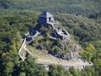
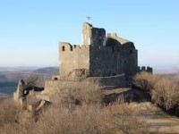
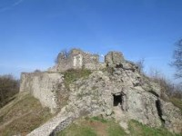
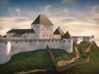
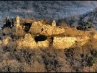

Várak
Salgótarján - Salgó vára
Salgó vára Nógrád megyében, Salgóbánya településtől nem messze található, a Medve-fennsík mintegy 625 méteres vulkáni csúcsát dísziti. A várból ma már csak a megmaradt tornyot láthatjuk, de a panoráma innen is csodálatos. Salgó vára 1935-ben turisztikai célból felújításra került, de komolyabban az 1980-as években kezdték meg feltárását és helyreállítását, hogy megmentsék az elmúlástól. Bányászati Múzeum
Hollókő - vár
A falu fölé magasodik a Hollókői vár, mely biztosította a falu védelmét a palócok és a husziták közötti feudális harcok során. A vár 400 méter magasan fekszik A várat 1260-as években építették, miután a tatárjárás után IV. Béla a kővárak építését szorgalmazta. A vár többször gazdát cserélt az évszázadok során, Csák Máté, Károly Róbert, Széchenyi Tamás, a husziták vezére, Giskra is birtokolta. A Szatmári békekötést követően, 1711-ben I. Lipót leromboltatta a várat. Részlegesen felújították a romvárat. A toronyba felmászva szemet gyönyörködtető panoráma nyílik elénk a Cserhát lankáira és a falura is. Középkori fegyverkiállítás és panoptikum tekinthető meg a vár termeiben. Parkolótól alig negyedórás sétával könnyen megközelíthető a tanösvényen keresztül.
Drégelypalánk - Drégely vára
Drégely vára a Börzsöny északi vonulatának egyik hegycsúcsán, Drégelypalánk felett helyezkedik el. A hegy tetején húzódó, 444 méter magasan található Drégely várát csak gyalogosan lehet megközelíteni, jól járható turistautakon. A vártól déli irányba lévő pihenőhelynél több turistaút is egymásba csatlakozik, de a legalkalmasabb megközelítés Drégelypalánk, illetve Nagyoroszi felől kínálkozik. Szondi Kiállítótér és Turisztikai Központ: Interaktív elemekkel gazdagított kiállítása, programjai látványos formában mutatják be Szondi várkapitány hős korát.
Somoskői vár – Salgótarján
Magyarország és Szlovákia peremén magasodik a Somoskői vár 526 méteres magasságban. A vulkáni csúcson álló várat a magyar oldalról, Somoskő településrészről közelíthető meg. Azonban a bejárata már a szomszédos országunkban helyezkedik el. A vár körül barangolva megcsodálhatjuk a bazaltorgonákat, melyeket a bejárat melletti lejtős úton érhetünk el pár perc sétával. Érdemes a megtekinteni a vár alatt álló Petőfi kunyhót is.
Nógrád – Nógrádi vár
A Nógrádi vár még ma is csodálatos látvánnyal magasodik a Börzsöny keleti részén. Magyarország egyik legrégebbi kővárai közé tartozik a belsőtornyos és belső várból álló építmény.
Buják - Bujáki vár
Egy 310 méter magas hegyen (Sár-hegy) találhatjuk Buják várának romjait. Mindez a falutól északra, erdős hegyektől ölelve áll. A vár belsejében fokozott elővigyázatosság szükséges, az omladozó falak miatt! A vár tetejére egy rossz állapotú, keskeny lépcsőzeten keresztül lehet feljutni. Amennyiben egy jót szeretnénk kirándulni mindenképp a Sár-hegy úton sétáljunk fel a várromhoz.